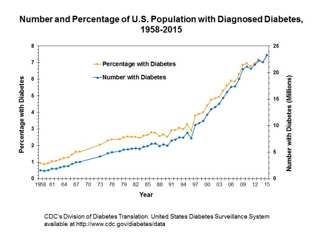

From experience, many people have testified to the relationship between acne and food. Dietitians are frequently witnessed quoting: “If it tastes good, it’s bad for you” (Issac Asimov, Russian-born biochemist and science fiction writer). However, this relationship is not only evident through experiences, but rather in one study, diet was identified as the third most frequently implicated factor (after hormones and genetics) as the cause of the disease, with 32% of the respondents selecting diet as the main cause, and 44% thinking that foods aggravate acne. In another study that analyzed knowledge about causes of acne among English teenagers, 11% of the responders blamed greasy food as the main cause of the disease, whereas in another study found that 41% of final-year medical students of the University of Melbourne chose diet as an important factor of acne exacerbation on a final examination.
Most studies performed so far has revealed the potential link between the consumption of high glycemic food (processed and high in sugar) and acne. These studies showed that putting volunteers on a low glycemic diet either resulted in a reduction in acne or lead to a change in volunteers' hormone level which may result in improved acne.
Unfortunately, most modern diets are filled with glycemic food causing people to live with chronically elevated insulin levels.
This graph above shows the trend in diabtes cases in the United States from 1958 to 2015, mostly resulting from consumption of a high-sugar diet. Chronically elevated insulin levels may lead to:
Elevated insulin levels causes an increase in insulin-like growth factor (IGF-1), a hormone which promotes cell growth. Scientists have said that this may lead to an overgrowth of cells inside pores and/or an increase in skin oil production, which could cause pores to become clogged, leading to acne.
Chronically elevated insulin levels lower the amount of insulin-like growth factor binding-protein 3 (IGFBP-3) in the blood 1. IGFBP-3 regulates IGF-1 and keeps it in check by preventing IGF-1 from binding to its cellular receptor. So, lower amounts of IGFBP-3 means even higher IGF-1 levels.
Insulin acts as a “master” hormone. Increased insulin levels raise androgen (male hormone) levels. Increased androgen levels are well known for their effect on stimulating sebum production, which can lead to more severe acne symptoms2.
Current evidence does show that the fat we eat is in fact used to make skin oil (sebum). In addition, at least one study has shown that fatty diets lead to higher fat content in sebum.5 The evidence stops there. Whether more fat in sebum leads toward increased or decreased acne symptoms is up for debate. Scientists are looking into the nature of sebum, particularly its saturated or unsaturated content, to see if they can find clues to acne development3.
Regardless, people should eat everything in moderation. Excess or complete avoidance of one catagory of food may also result in a bad skin. Notwithstanding, fat is an essential part of our diet and a complete removal of fat can make onemore prone to sunburn, leading to increased signs of aging and skin cancer.
The border line is to keep your gut healthy. Although, we might see our skin and gut as two seperate entities, modern research shows a connection between our gut health and skin, commonly reffered to as the "gut-skin axis".
"When your gut microbiome is out of balance, the cells of the gut do not work properly which allows pro-inflammatory molecules to escape and enter the bloodstream," says Dr. Brooke Jeffy. "These molecules get to the skin where they trigger inflammation that causes accelerated aging or flares of rosacea, acne, eczema and psoriasis."
Probiotics may restore the composition of the gut microbiome and introduce beneficial functions to gut microbial communities, resulting in amelioration or prevention of gut inflammation and other intestinal or systemic disease phenotypes. A growing body of evidence suggests that using probiotics in both pill and topical form may help prevent and treat skin conditions including eczema, acne, dry skin, and UV-induced skin damage, Kober says.